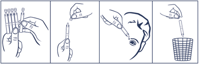
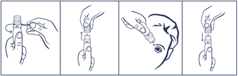

|
 |
| ГИЛАН УЛЬТРА КОМФОРТ (GYLAN ULTRA COMFORT) раствор увлажняющий офтальмологический | ||||||||||
|
Номер и дата регистрации: РЗН 2015/3476 от 24.07.18 Групповая принадлежность: Медицинское изделие для увлажнения и защиты слизистой оболочки глаза |
Владелец регистрационного удостоверения: зарегистрировано и произведено Представительство: | |||||||||
Форма выпуска, состав и упаковка Раствор увлажняющий офтальмологический в виде бесцветной, слегка вязкой жидкости без запаха.
Вспомогательные вещества: сорбитол - 18 мг, динатрия гидрофосфата дигидрат - 7.48 мг, натрия дигидрофосфата дигидрат - 2.83 мг, вода д/и - до 1 мл. 0.4 мл - тюбики-капельницы полиэтиленовые или полипропиленовые (10) - пакеты из пленки фольгированной (1) - пачки картонные. Раствор увлажняющий офтальмологический в виде бесцветной, слегка вязкой жидкости без запаха.
Вспомогательные вещества: сорбитол - 22 мг, динатрия гидрофосфата дигидрат - 9.14 мг, натрия дигидрофосфата дигидрат - 3.45 мг, вода д/и - до 1 мл. 10 мл - флаконы пластмассовые (1) в комплекте с капельным дозатором - пакеты из пленки фольгированной (1) - пачки картонные. | ||||||||||
| ||||||||||
Описание препарата основано на официально утвержденной инструкции по применению и утверждено компанией-производителем для издания 2022 г. | ||||||||||
Свойства |
Область применения |
Рекомендации по применению |
Побочное действие |
Противопоказания |
Беременность и лактация |
Особые указания |
Передозировка |
Лекарственное взаимодействие |
Условия хранения и сроки годности |
Условия реализации
Свойства
Раствор предназначен для использования в офтальмологии для ухода за глазами. Гилан Ультра комфорт воспроизводит действие естественной слезы, защищает и увлажняет поверхность глаза и смазывает ее. Средство оказывает долговременное облегчающее действие при сухости глаз, обусловленной различными факторами:
Медицинское изделие Гилан Ультра комфорт представляет собой стерильный 0.3% водный раствор натрия гиалуроната. Действующее вещество - высокоочищенный натрия гиалуронат, произведенный методом бактериальной ферментации. Натрия гиалуронат является физиологическим полисахаридным соединением, содержащимся как в тканях глаза, так и других тканях и жидкостях организма человека. Особым физико-химическим свойством молекул натрия гиалуроната является их выраженная способность связывать молекулы воды. Водный раствор натрия гиалуроната (Гилан) обладает необходимой вязкостью и высокими адгезивными свойствами. При применении офтальмологического раствора Гилан Ультра комфорт на эпителии роговой оболочки глаза образуется тонкая равномерная пленка, предохраняющая глаза от пересыхания, раздражения и развития воспаления передней поверхности глазного яблока. Действие защитной пленки начинается практически сразу. Глаза надолго защищены от ощущения сухости, рези, чувства инородного тела, раздражения, которые часто возникают при работе за компьютером, при длительном использовании кондиционеров или другого офисного оборудования, в случаях ухудшения экологической обстановки. При систематическом использовании контактных линз рекомендуется применение офтальмологического раствора Гилан Ультра комфорт, который способствует длительному увлажнению глаза, т.к. его действие идентично натуральной слезной жидкости. Офтальмологический раствор Гилан Ультра комфорт не содержит консервантов, поэтому отсутствует нежелательное токсическое действие на ткани глаза. Гилан Ультра комфорт оказывает более длительное действие за счет более высокого содержания натрия гиалуроната и повышенной вязкости раствора (9.0-18.0 мПа•с). Область применения
Рекомендации по применению
Раствор закапывают по 1-2 капли в конъюнктивальный мешок, по мере необходимости до 6 раз/сут. Порядок работы с тюбиком-капельницей (юнидозой)  1. Отделить 1 тюбик-капельницу. 2. Вскрыть тюбик-капельницу (убедившись, что раствор находится в нижней части тюбика-капельницы, вращающими движениями повернуть и отделить клапан). 3. Закапать необходимое количество раствора в глаза. Доза, содержащаяся в тюбике-капельнице, достаточна для одного закапывания в оба глаза. После однократного использования тюбик-капельницу следует выбросить, даже если осталось содержимое. После вскрытия пакета следует использовать тюбик-капельницы (юнидозы) в течение 1 года. Порядок работы с флаконом, укомплектованным капельным дозатором  1. Удалить предохранительное кольцо перед первым использованием флакона. 2. Осторожно снять колпачок с флакона. Не касаясь дозатора, перевернуть флакон дозатором вниз, зафиксировав между большим и указательным пальцами. Перед началом использования рекомендуется прокачать дозатор до появления первой капли раствора путем нескольких нажатий указательным пальцем сверху на флакон. 3. Запрокинуть голову назад, расположить дозатор флакона над глазом и указательным пальцем одной руки оттянуть нижнее веко вниз. Слегка надавить на флакон и закапать необходимое количество раствора в конъюнктивальный мешок глаза. Избегать контакта наконечника открытого флакона с поверхностью глаза и руками. 4. После использования надеть колпачок на флакон. После вскрытия пакета использовать флакон в течение 1 года. По истечении этого срока раствор следует уничтожить. При видимых повреждениях флакона применять раствор Гилан Ультра комфорт не следует. Побочное действие
Редко: аллергические реакции. Местные реакции: иногда появляется чувство склеивания век из-за вязкости раствора. Противопоказания
Применение при беременности и кормлении грудью
Раствор можно применять при беременности и кормлении грудью. Особые указания
Перед применением следует осмотреть упаковку и раствор. Не следует использовать раствор, если упаковка, тюбик-капельница или флакон повреждены. Порядок осуществления утилизации и уничтожения По степени опасности раствор относится к классу А эпидемиологически безопасным отходам по СанПин.2.1.7.2790 и подлежит утилизации как бытовые отходы. Влияние на способность к управлению транспортными средствами и механизмами Раствор не относится к изделиям, способным влиять на психомоторное состояние человека, не оказывает влияния на способность управлять автомобилем и работать с механизмами. Лекарственное взаимодействие
В случае совместного применения с офтальмологическими препаратами рекомендуется соблюдать паузу не менее 30 мин между закапыванием раствора Гилан Ультра комфорт и применением глазных капель. Глазные мази всегда должны применяться после закапывания раствора Гилан Ультра комфорт. |
||||||||||
Вернуться наверх |
||||||||||
Copyright © Справочник Видаль «Лекарственные препараты в России», Москва, Россия